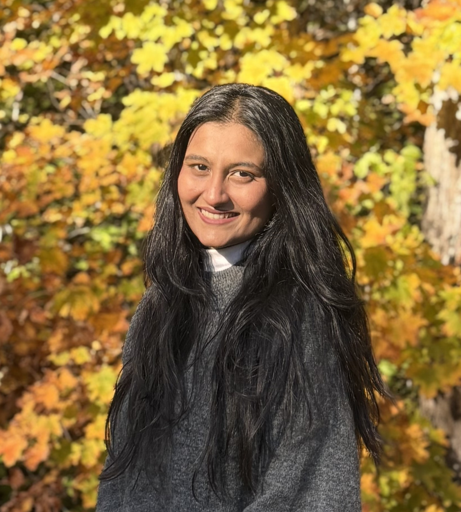

PhD Candidate in Health Economics & Outcomes Research · Pharmacoepidemiology · Real-World Evidence
A researcher specializing in real-world evidence, epidemiologic methods, and health-economic modeling — generating safety and efficacy evidence across oncology, cardiology, neuroscience, immunology, and infectious disease.

My work sits at the intersection of epidemiologic methods, machine learning, and health-economic modeling. I design and execute observational studies, build predictive risk models, and construct cost-effectiveness frameworks that translate real-world effectiveness into evidence regulators and payers can act on.
Across oncology, cardiology, neuroscience, immunology, and infectious disease, I've applied propensity-score and self-controlled designs, survival and mixed-effects modeling, network meta-analysis, and Markov microsimulation — pairing methodological rigor with a focus on questions that matter clinically and economically.
Generated regulatory-grade safety and efficacy evidence across oncology, cardiology, neuroscience, immunology, and infectious disease by analyzing large administrative claims, EHR, and in-house clinical-trial datasets. Applied propensity-score matched cohort and self-controlled case-series designs alongside machine-learning classifiers (random forests, gradient boosting, neural networks) and NLP for adverse-event detection and treatment-pathway characterization; conducted time-to-event survival and mixed-effects modeling with multiple imputation; and developed and validated Cox proportional-hazards and LASSO risk models using cross-validation and calibration. Constructed Markov and microsimulation health-economic models and synthesized comparative evidence through network meta-analyses and Bayesian hierarchical modeling — architecting and owning the end-to-end data pipelines and orchestration behind these analyses, with automated monitoring to ensure data quality and analytical reproducibility, and applying large language models to support epidemiologic and real-world-evidence study design.
Standardized ICD-9/10 and CPT coding to classify geriatric oncology diagnoses and evaluated the clinical outcomes of potentially inappropriate medication using descriptive and inferential analyses. Quantified associations between potentially inappropriate medication use and adverse outcomes — including hospitalization and functional decline — to inform safer prescribing in older oncology patients. Authored and submitted an abstract on geriatric medication safety, currently under review.
Performed cost-utility analysis integrating real-world effectiveness and utilization data to optimize payer strategies for COVID-19 monoclonal antibody treatments, and developed a decision-analytic Markov model using NHDR data to estimate the ICER of monoclonal antibody therapy in high-risk patients. Conducted a cross-sectional cohort surveillance study quantifying the prevalence and risk factors of long-COVID symptoms, and modeled the direct healthcare costs of long-COVID management via claims-based cost analyses and multivariable regression.
Nguyen, N. T. H., Lituiev, D. S., Liu, Z., Kashyap, A., Jenkinson, G., Kuhl, K., Corrado, C., Patel, N. M., Snigdha, K., Saeedi, S., Smith, D., Baro, N., & Schultz, T. (2026). Med.ai ASK: an agentic system for biomedical question answering ↗
Journal of the American Medical Informatics Association, 33(6), 1134–1145.
Patel, N. Pharmacophore Mapping — An Important Tool in Ligand- and Structure-Based Drug Design.
Under communication with European Chemical Bulletin (ECB), Budapest, 2025–2026.
The Role of Systematic Literature Review and Meta-Analysis in Advancing Clinical Research.
7th Annual Real-World Evidence & Analytics Conference, 2024.
Arora, H., Mammi, M., Patel, N. M., Zyfi, D., Dasari, H. R., Yunusa, I., Simjian, T., Smith, T. R., & Mekary, R. A. (2023). Dexamethasone and overall survival and progression-free survival in patients with newly diagnosed glioblastoma: A meta-analysis ↗
Journal of Neuro-Oncology, 166(1), 17–26. · PMID: 38151699
Pharmacophore Modeling in Drug Design ↗
International Conference on COVID-19: Opportunities and Challenges in Pharmaceutical Research, 2021.
Pharmacophore Mapping — An Important Tool in Ligand- and Structure-Based Drug Design.
International Conference on Molecular Structure & Instrumental Approaches, 2020.
An end-to-end cost-effectiveness analysis carried through the full decision-analytic toolkit. Built on a state-transition Markov model, the evaluation paired deterministic sensitivity analysis with probabilistic sensitivity analysis (PSA), and translated the results into cost-effectiveness acceptability curves (CEACs) and acceptability frontiers (CEAFs). I further quantified decision uncertainty and the value of additional research using expected value of perfect information (EVPI) alongside net-loss and net-benefit metrics — producing a complete view of cost-effectiveness and decision risk across willingness-to-pay thresholds.
A systematic review and meta-analysis evaluating whether preoperative dexamethasone affects overall and progression-free survival in newly diagnosed glioblastoma. After defining a priori inclusion/exclusion criteria and screening the literature for eligible cohorts, I extracted hazard ratios and survival endpoints, pooled effect estimates under a random-effects model, and quantified between-study heterogeneity using the I² statistic. The resulting forest plot showed a non-significant association across studies — confidence intervals crossing the null and p-values above threshold — findings that informed the published Journal of Neuro-Oncology manuscript.
A retrospective cohort study (2015–2019) in the SEER-Medicare database comparing the cardiac safety of metformin versus sulfonylureas among colorectal cancer patients with type 2 diabetes mellitus. I constructed treatment cohorts from linked claims, estimated time-to-event cardiac outcomes with Kaplan-Meier survival curves, and fit Cox proportional-hazards models adjusting for age and prior heart-failure history. The adjusted primary analysis identified statistically significant cardiac risk differences, while a secondary unadjusted analysis produced comparable outcomes — underscoring the role of confounding control in real-world safety comparisons.
A cost-effectiveness and burden-of-illness evaluation of antibiotic regimens for respiratory tract infections, synthesizing evidence from the NHS EED, the CEA Registry, and PubMed. I performed structured data extraction and formal risk-of-bias assessment, then built decision-analytic cost-effectiveness models in Excel to compare incremental costs and outcomes across treatment strategies. The analysis delivered economic evaluations supporting evidence-based antibiotic resource-allocation and stewardship decisions.